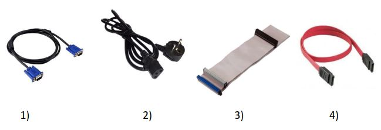
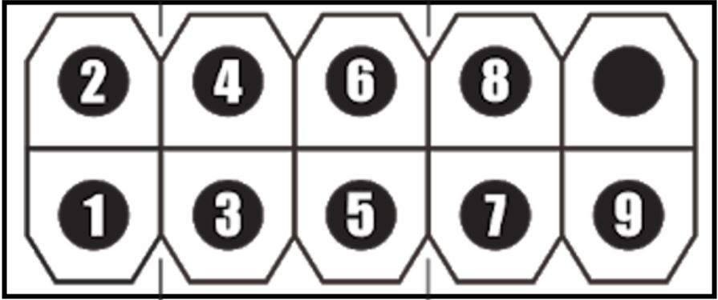
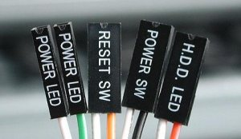
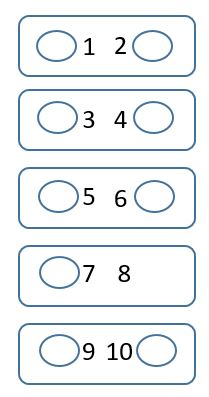

- Sisa waktu
30 : 00
-
Data
Pengguna
1

1. Perhatikan gambar berikut!

Saat merakit komputer di laboratorium, Pak Guru meminta Anda mengambil kabel yang berfungsi untuk menghubungkan Motherboard dengan perangkat penyimpanan. Kabel yang harus diambil adalah nomor ....
2. Perhatikan gambar berikut!
Pasangan kabel Front Panel yang seharusnya dipasang pada nomor 1 dan 3 adalah ....
3. Perhatikan gambar berikut!

Pemasangan jumper tersebut untuk menentukan status ....
4. Perhatikan gambar berikut!
Pada kabel Front Panel tersebut, kabel yang bernilai negatif (-) mempunyai warna ….
5. Cara yang benar menentukan kabel positif dan negatif pada kabel Front Panel, kecuali ....
6. Perhatikan gambar berikut!

Alat tersebut mempunyai fungsi sebagai berikut, kecuali ….
7. Sebelum merakit komputer, disediakan kotak obeng yang berisi berbagai macam obeng. Dari daftar berikut, yang dapat digunakan untuk perakitan komputer diantaranya yaitu ....
8. Perhatikan gambar berikut!
Jika kabel front audio tidak berfungsi (rusak), maka kita dapat menggunakan jumper sebagai alternatif dengan memasangnya pada nomor ...
9. Perhatikan gambar berikut!

Dari macam-macam jenis sekrup dan baut tersebut ada beberapa yang digunakan untuk Motherboard, diantaranya ….
10. Perhatikan gambar berikut!
Kabel yang digunakan untuk nomor 2 dan 7 secara berturut-turut adalah ....